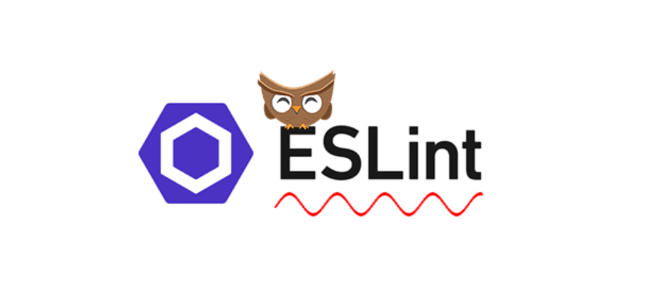

After my first week of using IntelliJ, I’ve become increasingly acquainted with the IDE and its array of features. While I’m still in the process of mastering the keyboard shortcuts, I’m optimistic that over time, they’ll become second nature to me.
On Another note, my experience with setting up ESLint had its initial hiccups. It can be a bit of a hassle to configure, especially when you’re first getting started. However, with a little perseverance and practice, it becomes a much smoother process. The real beauty of ESLint emerges when you witness its impact on code quality. It’s like a magician, transforming your code into a neatly organized masterpiece that’s far easier to read and comprehend.
What’s particularly impressive is the seamless integration ESLint offers with IntelliJ. This synergy simplifies the task of spotting and rectifying errors, enhancing my coding experience considerably. All in all, despite some initial hurdles, the benefits of using ESLint are undeniable and make the initial setup efforts well worth it.
I personally find the green checkmark incredibly satisfying and rewarding. It instills in me a sense of accomplishment, knowing that I’ve adhered to coding practices that prioritize cleanliness and conciseness. Admittedly, there are moments when ESLint can be a tad irksome, especially when you’re just starting on a new piece of code, and it flags an error simply because you haven’t yet used a variable or for similar minor reasons. However, these are minor inconveniences.
On the whole, I firmly believe that striving for and achieving that green checkmark is unquestionably beneficial. It serves as a constant reminder to maintain coding discipline, fosters better code quality, and ultimately contributes to a more organized and efficient development process.